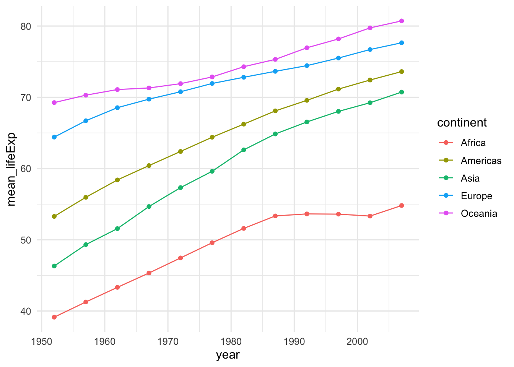

| country | continent | year | lifeExp | pop | gdpPercap |
|---|---|---|---|---|---|
| Afghanistan | Asia | 1952 | 28.801 | 8425333 | 779.4453 |
| Afghanistan | Asia | 1957 | 30.332 | 9240934 | 820.8530 |
| Afghanistan | Asia | 1962 | 31.997 | 10267083 | 853.1007 |
| Afghanistan | Asia | 1967 | 34.020 | 11537966 | 836.1971 |
| Afghanistan | Asia | 1972 | 36.088 | 13079460 | 739.9811 |
| Afghanistan | Asia | 1977 | 38.438 | 14880372 | 786.1134 |
Lesson 3
Data Wrangling
Learning Objectives
After this lesson, students will be able to:
Use the
dplyrfunctionsselectandfilterto manipulate rows and columns of a data frame.Use the
mutatefunction to add new columns to a data frame.Use
group_byto group observations in one or more columns of a data frame by a grouping variable.Use the
summarizefunction with thegroup_byfunction to compute grouped summaries.Use
pivot_longerandpivot_widerfunctions to perform certain types of reorganizations of a data frame.Use the
joinfamily of functions to combine separate data sets into one.
Readings, etc.
For this lesson, refer to the following readings, etc.:
Chapter 3 of Data Science: A First Introduction by Tiffany Timbers, Trevor Campbell, and Melissa Lee (Timbers, Campbell, and Lee 2022). View the free online version of the text..
Chapter 5 of R for Data Science by Wickham and Grolemund (Wickham, Çetinkaya-Rundel, and Grolemund 2023). View the chapter online
Overview
Real world data rarely comes in exactly the right form for the analysis you want to do. This has led to the implementation of methods that facilitate manipulating data in a way that allows us to more easily address some of the common problems with data sets. In this lesson, we will introduce such methods which include but are not limited to
selecting certain rows or columns of tabular data,
creating new variables or columns, often by transforming existing ones,
grouping or arranging observations,
reshaping parts of the data,
joining multiple tabular data sets.
A particularly common application of these methods is to get data into an appropriate shape required for a particular type of plot, visualization, or summary.
The R package dplyr which belongs to the tidyverse family of packages is one of the available implementations of the common data manipulation methods (Wickham et al. 2023). The dplyr package is robust, well-documented, easy-to-use, and efficient so we will explore it in this lesson. It is worth while to take a moment to visit the ‘dplyr’ website as it contains helpful information and resources, view the webpage.
Data For the Lesson
In this lesson, we will make use of a few data sets. This includes:
- The Gapminder data set which is available in R through the
gapminderpackage. To refresh our memories, let’s examine the first few rows of the Gapminder data:
- Data from the
nycflights13package which we load (make sure the package is installed) using
library(nycflights13)We can see a list of the data available in the nycflights13 package with the command
data(package="nycflights13")which produces a table with the following information:
| Name of Data Set | Information |
|---|---|
airlines |
Airline names |
airports |
Airport metadata |
flights |
Flights data |
planes |
Plane metadata |
weather |
Hourly weather data |
For example, the flights data has first few rows
| year | month | day | dep_time | sched_dep_time | dep_delay | arr_time | sched_arr_time | arr_delay | carrier | flight | tailnum | origin | dest | air_time | distance | hour | minute | time_hour |
|---|---|---|---|---|---|---|---|---|---|---|---|---|---|---|---|---|---|---|
| 2013 | 1 | 1 | 517 | 515 | 2 | 830 | 819 | 11 | UA | 1545 | N14228 | EWR | IAH | 227 | 1400 | 5 | 15 | 2013-01-01 05:00:00 |
| 2013 | 1 | 1 | 533 | 529 | 4 | 850 | 830 | 20 | UA | 1714 | N24211 | LGA | IAH | 227 | 1416 | 5 | 29 | 2013-01-01 05:00:00 |
| 2013 | 1 | 1 | 542 | 540 | 2 | 923 | 850 | 33 | AA | 1141 | N619AA | JFK | MIA | 160 | 1089 | 5 | 40 | 2013-01-01 05:00:00 |
| 2013 | 1 | 1 | 544 | 545 | -1 | 1004 | 1022 | -18 | B6 | 725 | N804JB | JFK | BQN | 183 | 1576 | 5 | 45 | 2013-01-01 05:00:00 |
| 2013 | 1 | 1 | 554 | 600 | -6 | 812 | 837 | -25 | DL | 461 | N668DN | LGA | ATL | 116 | 762 | 6 | 0 | 2013-01-01 06:00:00 |
| 2013 | 1 | 1 | 554 | 558 | -4 | 740 | 728 | 12 | UA | 1696 | N39463 | EWR | ORD | 150 | 719 | 5 | 58 | 2013-01-01 05:00:00 |
The dplyr Package
The dplyr package consists of a set of functions that help you solve the most common data manipulation challenges (Wickham et al. 2023). Before discussing the individual functions, it’s worth listing what they have in common:
The first argument is always a data frame.
The subsequent arguments typically describe which columns to operate on, using the variable names (without quotes).
The output is always a new data frame.
Now we will give examples of the typical use for the common dplyr functions:
Selecting Columns
The select function extracts specified columns from a data frame:
gapminder %>%
select(country,year,lifeExp)# A tibble: 1,704 × 3
country year lifeExp
<fct> <int> <dbl>
1 Afghanistan 1952 28.8
2 Afghanistan 1957 30.3
3 Afghanistan 1962 32.0
4 Afghanistan 1967 34.0
5 Afghanistan 1972 36.1
6 Afghanistan 1977 38.4
7 Afghanistan 1982 39.9
8 Afghanistan 1987 40.8
9 Afghanistan 1992 41.7
10 Afghanistan 1997 41.8
# ℹ 1,694 more rowsYou can also specify which columns you don’t want:
gapminder %>%
select(-continent)# A tibble: 1,704 × 5
country year lifeExp pop gdpPercap
<fct> <int> <dbl> <int> <dbl>
1 Afghanistan 1952 28.8 8425333 779.
2 Afghanistan 1957 30.3 9240934 821.
3 Afghanistan 1962 32.0 10267083 853.
4 Afghanistan 1967 34.0 11537966 836.
5 Afghanistan 1972 36.1 13079460 740.
6 Afghanistan 1977 38.4 14880372 786.
7 Afghanistan 1982 39.9 12881816 978.
8 Afghanistan 1987 40.8 13867957 852.
9 Afghanistan 1992 41.7 16317921 649.
10 Afghanistan 1997 41.8 22227415 635.
# ℹ 1,694 more rowsExercise: Select the columns dep_delay and carrier from the flights data set. Select all the columns in the flights data set except year, month, and day.
Filtering Rows
The filter function retains all rows of a data frame according to some specified condition(s).
gapminder %>%
filter(country == "Spain")# A tibble: 12 × 6
country continent year lifeExp pop gdpPercap
<fct> <fct> <int> <dbl> <int> <dbl>
1 Spain Europe 1952 64.9 28549870 3834.
2 Spain Europe 1957 66.7 29841614 4565.
3 Spain Europe 1962 69.7 31158061 5694.
4 Spain Europe 1967 71.4 32850275 7994.
5 Spain Europe 1972 73.1 34513161 10639.
6 Spain Europe 1977 74.4 36439000 13237.
7 Spain Europe 1982 76.3 37983310 13926.
8 Spain Europe 1987 76.9 38880702 15765.
9 Spain Europe 1992 77.6 39549438 18603.
10 Spain Europe 1997 78.8 39855442 20445.
11 Spain Europe 2002 79.8 40152517 24835.
12 Spain Europe 2007 80.9 40448191 28821.Notice that to specify equality for a condition in filter one must use the double equals ==.
Here are some other variations using filter:
gapminder %>%
filter(country == "Spain" | country == "Portugal")# A tibble: 24 × 6
country continent year lifeExp pop gdpPercap
<fct> <fct> <int> <dbl> <int> <dbl>
1 Portugal Europe 1952 59.8 8526050 3068.
2 Portugal Europe 1957 61.5 8817650 3775.
3 Portugal Europe 1962 64.4 9019800 4728.
4 Portugal Europe 1967 66.6 9103000 6362.
5 Portugal Europe 1972 69.3 8970450 9022.
6 Portugal Europe 1977 70.4 9662600 10172.
7 Portugal Europe 1982 72.8 9859650 11754.
8 Portugal Europe 1987 74.1 9915289 13039.
9 Portugal Europe 1992 74.9 9927680 16207.
10 Portugal Europe 1997 76.0 10156415 17641.
# ℹ 14 more rowsgapminder %>%
filter(year >= 1979)# A tibble: 852 × 6
country continent year lifeExp pop gdpPercap
<fct> <fct> <int> <dbl> <int> <dbl>
1 Afghanistan Asia 1982 39.9 12881816 978.
2 Afghanistan Asia 1987 40.8 13867957 852.
3 Afghanistan Asia 1992 41.7 16317921 649.
4 Afghanistan Asia 1997 41.8 22227415 635.
5 Afghanistan Asia 2002 42.1 25268405 727.
6 Afghanistan Asia 2007 43.8 31889923 975.
7 Albania Europe 1982 70.4 2780097 3631.
8 Albania Europe 1987 72 3075321 3739.
9 Albania Europe 1992 71.6 3326498 2497.
10 Albania Europe 1997 73.0 3428038 3193.
# ℹ 842 more rowsgapminder %>%
filter(year >= 1979 & country == "Spain")# A tibble: 6 × 6
country continent year lifeExp pop gdpPercap
<fct> <fct> <int> <dbl> <int> <dbl>
1 Spain Europe 1982 76.3 37983310 13926.
2 Spain Europe 1987 76.9 38880702 15765.
3 Spain Europe 1992 77.6 39549438 18603.
4 Spain Europe 1997 78.8 39855442 20445.
5 Spain Europe 2002 79.8 40152517 24835.
6 Spain Europe 2007 80.9 40448191 28821.Exercise: Use filter to select those observations in the flights data that had a departure from JFK airport. Use filter to select those observations in the flights data that had a departure from JFK airport and the airline (carrier) is United Airlines (UA). Use filter to extract those observations where there was a departure delay that was an hour or more.
Grouping
The group_by function allows us to group observations in a data frame by one or more grouping variables. The syntax for group_by is:
gapminder %>%
group_by(year)# A tibble: 1,704 × 6
# Groups: year [12]
country continent year lifeExp pop gdpPercap
<fct> <fct> <int> <dbl> <int> <dbl>
1 Afghanistan Asia 1952 28.8 8425333 779.
2 Afghanistan Asia 1957 30.3 9240934 821.
3 Afghanistan Asia 1962 32.0 10267083 853.
4 Afghanistan Asia 1967 34.0 11537966 836.
5 Afghanistan Asia 1972 36.1 13079460 740.
6 Afghanistan Asia 1977 38.4 14880372 786.
7 Afghanistan Asia 1982 39.9 12881816 978.
8 Afghanistan Asia 1987 40.8 13867957 852.
9 Afghanistan Asia 1992 41.7 16317921 649.
10 Afghanistan Asia 1997 41.8 22227415 635.
# ℹ 1,694 more rowsor for more than one variable:
gapminder %>%
group_by(country,year)# A tibble: 1,704 × 6
# Groups: country, year [1,704]
country continent year lifeExp pop gdpPercap
<fct> <fct> <int> <dbl> <int> <dbl>
1 Afghanistan Asia 1952 28.8 8425333 779.
2 Afghanistan Asia 1957 30.3 9240934 821.
3 Afghanistan Asia 1962 32.0 10267083 853.
4 Afghanistan Asia 1967 34.0 11537966 836.
5 Afghanistan Asia 1972 36.1 13079460 740.
6 Afghanistan Asia 1977 38.4 14880372 786.
7 Afghanistan Asia 1982 39.9 12881816 978.
8 Afghanistan Asia 1987 40.8 13867957 852.
9 Afghanistan Asia 1992 41.7 16317921 649.
10 Afghanistan Asia 1997 41.8 22227415 635.
# ℹ 1,694 more rowsBy itself, group_by isn’t very useful. However, used with other functions it can be extremely useful. For example, we can combine group_by and summarise to create grouped summaries:
gapminder %>%
group_by(year) %>%
summarise(mean_lifeEx = mean(lifeExp))# A tibble: 12 × 2
year mean_lifeEx
<int> <dbl>
1 1952 49.1
2 1957 51.5
3 1962 53.6
4 1967 55.7
5 1972 57.6
6 1977 59.6
7 1982 61.5
8 1987 63.2
9 1992 64.2
10 1997 65.0
11 2002 65.7
12 2007 67.0Here is another example:
flights %>%
filter(dep_delay >= 1) %>%
group_by(carrier) %>%
summarise(n_carrier = n())# A tibble: 16 × 2
carrier n_carrier
<chr> <int>
1 9E 7063
2 AA 10162
3 AS 226
4 B6 21445
5 DL 15241
6 EV 23139
7 F9 341
8 FL 1654
9 HA 69
10 MQ 8031
11 OO 9
12 UA 27261
13 US 4775
14 VX 2225
15 WN 6558
16 YV 233This tells us the number of times each carrier has a departure delay of at least an hour. We can add the arrange function to put these in order:
flights %>%
filter(dep_delay >= 1) %>%
group_by(carrier) %>%
summarise(n_carrier = n()) %>%
arrange(n_carrier)# A tibble: 16 × 2
carrier n_carrier
<chr> <int>
1 OO 9
2 HA 69
3 AS 226
4 YV 233
5 F9 341
6 FL 1654
7 VX 2225
8 US 4775
9 WN 6558
10 9E 7063
11 MQ 8031
12 AA 10162
13 DL 15241
14 B6 21445
15 EV 23139
16 UA 27261or if we want the opposite order:
flights %>%
filter(dep_delay >= 1) %>%
group_by(carrier) %>%
summarise(n_carrier = n()) %>%
arrange(desc(n_carrier))# A tibble: 16 × 2
carrier n_carrier
<chr> <int>
1 UA 27261
2 EV 23139
3 B6 21445
4 DL 15241
5 AA 10162
6 MQ 8031
7 9E 7063
8 WN 6558
9 US 4775
10 VX 2225
11 FL 1654
12 F9 341
13 YV 233
14 AS 226
15 HA 69
16 OO 9Exercise: Use group_by and summarise to compute the average departure delay by carrier. Use group_by and summarise to find the number of times each airport has had departure delays of an hour or more, use arrange to place the airports with the most departure delays at the top.
We can group by more than one variable:
gapminder %>%
group_by(year,continent) %>%
summarise(continent_count = n())`summarise()` has grouped output by 'year'. You can override using the
`.groups` argument.# A tibble: 60 × 3
# Groups: year [12]
year continent continent_count
<int> <fct> <int>
1 1952 Africa 52
2 1952 Americas 25
3 1952 Asia 33
4 1952 Europe 30
5 1952 Oceania 2
6 1957 Africa 52
7 1957 Americas 25
8 1957 Asia 33
9 1957 Europe 30
10 1957 Oceania 2
# ℹ 50 more rowsand also summarise more than one variable after grouping.
gapminder %>%
group_by(year,continent) %>%
summarise(continent_count = n(),
mean_lifeExp = mean(lifeExp))`summarise()` has grouped output by 'year'. You can override using the
`.groups` argument.# A tibble: 60 × 4
# Groups: year [12]
year continent continent_count mean_lifeExp
<int> <fct> <int> <dbl>
1 1952 Africa 52 39.1
2 1952 Americas 25 53.3
3 1952 Asia 33 46.3
4 1952 Europe 30 64.4
5 1952 Oceania 2 69.3
6 1957 Africa 52 41.3
7 1957 Americas 25 56.0
8 1957 Asia 33 49.3
9 1957 Europe 30 66.7
10 1957 Oceania 2 70.3
# ℹ 50 more rowsWe will spend a lot of time later talking about plots and visualizations. Just to see what is possible, let’s make a plot using the results of a grouped summary:
a_grouped_summary <- gapminder %>%
group_by(year,continent) %>%
summarise(continent_count = n(),
mean_lifeExp = mean(lifeExp))`summarise()` has grouped output by 'year'. You can override using the
`.groups` argument.a_grouped_summary %>%
ggplot(aes(x=year,y=mean_lifeExp,color=continent)) +
geom_point() +
geom_line()
Exercise: Modify the code in the last code chunk to make a plot of the average departure delay by airport per each day. That is, the x-axis should be the day, the y-axis should be the average departure delay and the colors should distinguish the different airports. Hint: When you compute the mean, you will have to add an extra argument, na.rm=TRUE because there are missing values in the data.
Reshaping
Typically, we want our data to be in tidy format. This means
- Each variable is a column; each column is a variable.
- Each observation is a row; each row is an observation.
- Each value is a cell; each cell is a single value.
Figure 2 shows the rules visually.

Often, getting data into tidy format requires reshaping the data. But there maybe reasons to reshape the data from tidy format to another format. The pivot_longer and pivot_wider functions facilitate these types of reshaping.
gapminder %>%
select(country,year,lifeExp) %>%
pivot_wider(names_from = "year",values_from = lifeExp)# A tibble: 142 × 13
country `1952` `1957` `1962` `1967` `1972` `1977` `1982` `1987` `1992` `1997`
<fct> <dbl> <dbl> <dbl> <dbl> <dbl> <dbl> <dbl> <dbl> <dbl> <dbl>
1 Afghan… 28.8 30.3 32.0 34.0 36.1 38.4 39.9 40.8 41.7 41.8
2 Albania 55.2 59.3 64.8 66.2 67.7 68.9 70.4 72 71.6 73.0
3 Algeria 43.1 45.7 48.3 51.4 54.5 58.0 61.4 65.8 67.7 69.2
4 Angola 30.0 32.0 34 36.0 37.9 39.5 39.9 39.9 40.6 41.0
5 Argent… 62.5 64.4 65.1 65.6 67.1 68.5 69.9 70.8 71.9 73.3
6 Austra… 69.1 70.3 70.9 71.1 71.9 73.5 74.7 76.3 77.6 78.8
7 Austria 66.8 67.5 69.5 70.1 70.6 72.2 73.2 74.9 76.0 77.5
8 Bahrain 50.9 53.8 56.9 59.9 63.3 65.6 69.1 70.8 72.6 73.9
9 Bangla… 37.5 39.3 41.2 43.5 45.3 46.9 50.0 52.8 56.0 59.4
10 Belgium 68 69.2 70.2 70.9 71.4 72.8 73.9 75.4 76.5 77.5
# ℹ 132 more rows
# ℹ 2 more variables: `2002` <dbl>, `2007` <dbl>Preparation for the next lesson
For the next lesson we will begin discussing the exploratory data analysis (EDA) process starting with some data visualization.
Prior to starting the next lesson, please read Chapter 4 of (Timbers, Campbell, and Lee 2022), link here.
References
Timbers, Tiffany, Trevor Campbell, and Melissa Lee. 2022. Data Science: A First Introduction. CRC Press.
Wickham, Hadley, Mine Çetinkaya-Rundel, and Garrett Grolemund. 2023. R for Data Science. " O’Reilly Media, Inc.".
Wickham, Hadley, Romain François, Lionel Henry, Kirill Müller, and Davis Vaughan. 2023. Dplyr: A Grammar of Data Manipulation. https://CRAN.R-project.org/package=dplyr.
Expand for Session Info
─ Session info ───────────────────────────────────────────────────────────────
setting value
version R version 4.3.1 (2023-06-16)
os macOS Ventura 13.5.2
system aarch64, darwin20
ui X11
language (EN)
collate en_US.UTF-8
ctype en_US.UTF-8
tz America/New_York
date 2023-09-10
pandoc 3.1.1 @ /Applications/RStudio.app/Contents/Resources/app/quarto/bin/tools/ (via rmarkdown)
quarto 1.3.450 @ /usr/local/bin/quarto
─ Packages ───────────────────────────────────────────────────────────────────
package * version date (UTC) lib source
dplyr * 1.1.3 2023-09-03 [1] CRAN (R 4.3.0)
forcats * 1.0.0 2023-01-29 [1] CRAN (R 4.3.0)
gapminder * 1.0.0 2023-03-10 [1] CRAN (R 4.3.0)
ggplot2 * 3.4.3 2023-08-14 [1] CRAN (R 4.3.0)
kableExtra * 1.3.4 2021-02-20 [1] CRAN (R 4.3.0)
lubridate * 1.9.2 2023-02-10 [1] CRAN (R 4.3.0)
nycflights13 * 1.0.2 2021-04-12 [1] CRAN (R 4.3.0)
purrr * 1.0.2 2023-08-10 [1] CRAN (R 4.3.0)
readr * 2.1.4 2023-02-10 [1] CRAN (R 4.3.0)
readxl * 1.4.3 2023-07-06 [1] CRAN (R 4.3.0)
sessioninfo * 1.2.2 2021-12-06 [1] CRAN (R 4.3.0)
stringr * 1.5.0 2022-12-02 [1] CRAN (R 4.3.0)
tibble * 3.2.1 2023-03-20 [1] CRAN (R 4.3.0)
tidyr * 1.3.0 2023-01-24 [1] CRAN (R 4.3.0)
tidyverse * 2.0.0 2023-02-22 [1] CRAN (R 4.3.0)
[1] /Library/Frameworks/R.framework/Versions/4.3-arm64/Resources/library
──────────────────────────────────────────────────────────────────────────────
Reuse
CC BY-NC-SA 4.0